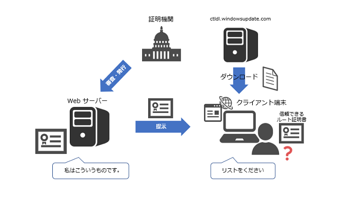

本記事はマイクロソフト社員によって公開されております。
こんにちは。Windows プラットフォーム サポートです。
ルート証明書更新プログラムとは、Windows OS 端末にルート証明書を自動でインストールする機能です。
証明書の正当性の検証を行うときに、証明書の発行元の証明機関が信頼された証明機関であることを確認します。
具体的には、証明書の信頼チェーン上の最上位にあるルート証明書が [信頼されたルート証明機関] のストアにインストールされているかを確認しています。
現在、多くの公的証明機関や商用証明機関が存在しており、証明書の検証を行う度に必要なルート証明書を手動でインストールするのは大変です。
Windows OS では、端末にルート証明書を自動できる仕組みとして「ルート証明書更新プログラム」という機能があります。
この機能は既定で有効になっており、必要に応じてルート証明書をダウンロードして [信頼されたルート証明機関] のストアに自動でインストールしております。
今回は、「ルート証明書更新プログラム」の機能の概要について説明します。
目次
1. ルート証明書更新プログラムとは？2. ルート証明書更新プログラムの動作
3. ルート証明書更新プログラムの有効/無効の設定
4. ルート証明書更新プログラムの通信影響
5. ルート証明書更新プログラム無効化の影響
1. ルート証明書更新プログラムとは？
ルート証明書更新プログラムとは Windows OS にルート証明書を配布するプログラムで、現在、約 150 以上の公的証明機関、商用証明機関がプログラムに参加しております。
これらの証明機関のルート証明書を、あらかじめ信頼されているものとして定義しており、必要になった際に端末に自動でルート証明書をダウンロードして「信頼されたルート証明機関」ストアにインストールします。
2. ルート証明書更新プログラムの動作
ルート証明書更新プログラムは、バックグラウンドで動作しており、ユーザーによる操作は必要ありません。
ルート証明書更新プログラムは、1) ルート証明書をインストールする、2) ルート証明書の信頼性を確認するという機能があります。
2 つの機能の動作の仕組みを紹介します。
2-1. ルート証明書の自動インストール
(1) 証明書の検証が発生
証明書がクライアント端末に提示され、クライアント端末にて証明書の検証が開始されます。
例えば、クライアント端末が Web サーバーの HTTPS サイトに接続した時などに、Web サーバーから身分証明のためにサーバー証明書が提示された時のシナリオを考えます。
クライアント端末は、この時点ではサーバー証明書を信頼してよいのかわかりません。
ここでは、クライアント端末が証明書の検証者となります。
(2) “信頼できるルート証明書のリスト” を入手
クライアント端末にて ctldl.windowsupdate.com へアクセスし、信頼できるルート証明書のリストをダウンロードします。
信頼できるルート証明書のリストは URL からダウンロードします。
http://ctldl.windowsupdate.com/msdownload/update/v3/static/trustedr/en/authrootstl.cab
※ authrootstl.cab が “信頼できるルート証明書のリスト” のファイルとなります。
※ URL のドメインは ctldl.windowsupdate.com となっておりますが、Windows Update の機能とは関係ございません。
「ルート証明書更新プログラム」と「Windows Update」は別の機能であり、ルート証明書更新プログラムの動作において更新プログラムが適用されることはありません。
(3) サーバー証明書の発行元のルート証明書を入手
クライアント端末はサーバー証明書の証明書チェーンを確認し、”信頼できるルート証明書のリスト” に発行元のルート証明書が含まれているか確認します。
“信頼できるルート証明書のリスト” は、ルート証明書の基本情報の一覧のみで、ルート証明書自体は含まれていません。
“信頼できるルート証明書のリスト” に発行元のルート証明書が含まれていれば、ctldl.windowsupdate.com へアクセスしてルート証明書をダウンロードします。
ルート証明書のリストは以下の URL からダウンロードして、[信頼されたルート証明機関] のストアにインストールします。
[信頼されたルート証明機関] のストアにインストールすることで、ルート証明書を信頼したことになります。
http://ctldl.windowsupdate.com/msdownload/update/v3/static/trustedr/en/<証明書の拇印>.crt
“信頼できるルート証明書のリスト” に発行元のルート証明書が含まれていなければ、検証中の証明書は信頼できる証明機関から発行されていないと判断されます。
(4) サーバー証明書を信頼
クライアント端末の [信頼されたルート証明機関] ストアにルート証明書が登録されていると、そのルート証明機関は信頼されます。
また、そのルート証明機関の配下にある中間証明機関も信頼されます。
証明機関を信頼すれば、その証明機関で発行している証明書も信頼できることになります。
そのため、Web サーバーから提示されたサーバー証明書は信頼できる証明書と判断されるようになります。
2-2. ルート証明書の信頼性を確認
ルート証明書更新プログラムでは、信頼されないルート証明機関の確認を行う機能もございます。
証明書の署名には証明機関の秘密キーが利用されますが、万一、第三者に秘密キーが漏洩してしまった場合、
秘密キーを入手した者が自由に証明書を発行して悪用することができるようになります。
そのため、秘密キーが漏洩したルート証明機関のルート証明書は、信頼してはいけないルート証明書として扱う必要がでてきます。
ルート証明書更新プログラムでは、セキュリティ リスクがあるルート証明書の一覧も管理しております。
証明書の信頼性の検証を行う際、ルート証明書が “信頼されていないルート証明書のリスト” に含まれていないかを確認します。
ルート証明書が [信頼されたルート証明機関] の証明書ストアに登録されており、信頼される構成となっている場合でも、
“信頼されていないルート証明書のリスト” を確認して、対象のルート証明書が含まれていないかを確認しております。
(1) 証明書の検証が発生
証明書がクライアント端末に提示され、クライアント端末にて証明書の検証が開始されます。
例えば、クライアント端末が Web サーバーの HTTPS サイトに接続した時などに、Web サーバーから身分証明のためにサーバー証明書が提示された時のシナリオを考えます。
サーバー証明書の証明書チェーン上のルート証明書が [信頼されたルート証明機関] のストアに入っていたとします。
しかし、ルート証明書が信頼できない状態になっている可能性もあります。
(2) “信頼できないルート証明書のリスト” をダウンロード
ルート証明書が信頼できないものになっていないかを確認するために、ctldl.windowsupdate.com へアクセスして “信頼できないルート証明書のリスト” をダウンロードします。
信頼できないルート証明書のリストは URL からダウンロードします。
http://ctldl.windowsupdate.com/msdownload/update/v3/static/trustedr/en/disallowedcertstl.cab
※ disallowedcertstl.cab が “信頼できないルート証明書のリスト” のファイルとなります。
(3) “信頼できないルート証明書のリスト” を確認
“信頼できないルート証明書のリスト” に対象のルート証明書が含まれていないか確認します。
リストに含まれていなければ、そのままルート証明書を信頼できます。
そのため、Web サーバーから提示されたサーバー証明書は信頼できる証明書と判断できます。
3. ルート証明書更新プログラムの有効/無効の設定
Windows OS では「ルート証明書更新プログラム」は既定で有効となっております。
そのため、特に追加の設定を行わなくても、ルート証明書は自動で登録される動作となります。
ルート証明書更新プログラムを無効化したい場合は、以下のポリシーにて設定変更を行うことができます。
ポリシー パス:
[コンピュータの構成] - [ポリシー] - [Windowsの設定] - [セキュリティの設定] - [公開キーのポリシー] - [証明書パス検証の設定]

ポリシー設定
/// 無効の設定：
[ネットワークの取得] タブで [これらのポリシーの設定を定義する] にチェックを入れた上で
[Microsoft ルート証明書プログラムで証明書を自動更新する] のチェックをはずします。
/// 有効の設定：
[ネットワークの取得] タブで [これらのポリシーの設定を定義する] にチェックを入れた上で
[Microsoft ルート証明書プログラムで証明書を自動更新する] のチェックを入れます。
もしくは、上記のポリシーが未構成の場合は、既定の設定である “有効” が反映されます。
上記のポリシーを設定している時、以下のレジストリが設定されます。
キー： HKEY_LOCAL_MACHINE\Software\policies\Microsoft\SystemCertificates\AuthRoot
型：REG_DWORD
値：DisableRootAutoUpdate
設定値： 0 または 1
※ ルート証明書更新プログラムが有効の場合は設定値は 0、無効の場合は設定値は 1 となります。
上記のポリシーを設定していない場合は、上記のレジストリは存在しません。
4. ルート証明書更新プログラム動作時の通信影響
ルート証明書更新プログラムでの、ルート証明書を自動登録において発生する通信において、ネットワークへの通信量へ影響を与えることは想定されません。
authrootstl.cab のファイルサイズは、60 KB 程度で、disallowedcertstl.cab のファイルサイズは、5 KB 程度となります。
ルート証明書更新プログラムが動作する度に、毎回、authrootstl.cab や disallowedcertstl.cab をダウンロードするわけではありません。
authrootstl.cab のキャッシュは、7 日間有効となり、disallowedcertstl.cab のキャッシュの有効期間は 16 時間です。
有効期間内の cab キャッシュを保持している場合は、ルート証明書更新プログラムが動作しても URL から cab ファイルは取得しません。
また、ルート証明書のファイルサイズ自体も 1 ～ 3 KB と軽微なものであり、一度、ルート証明書をインストールすると [信頼されたルート証明機関] に残り続けます。
そのため、ルート証明書更新プログラムにより、ルート証明書を自動取得してインストールするという動作も頻繁に発生するものではございません。
5. ルート証明書更新プログラム無効化による影響
ルート証明書更新プログラムが利用できないと、ルート証明書を自動でインストールすることができません。
その場合、検証する対象の証明書の信頼チェーン上のルート証明書が信頼されていない場合、
ルート証明書を自動でインストールされないため、ルート証明書の信頼性が確認できず、証明書の検証に失敗いたします。
証明書の検証に失敗すると、証明書を利用するアプリケーションによっては問題が発生する可能性があります。
正常に HTTPS 通信が行えなかったり、コード署名の検証に失敗してドライバーやアプリのインストール等に
失敗する等の問題が発生する可能性が考えられます。